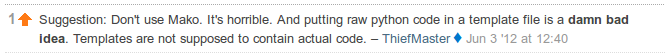

Last week I posted a question on Stack Overflow - “Mako template filter ordering” - this week it earned the Tumbleweed badge.
It’s always a little concerning when libraries and toolkits you’re using in a project have forums and message boards that are a little too quiet - is there a bad smell? Is there something bad I don’t know about this tech? Even worse is when you look around those quiet forums (or tags in Stack Overflow) you find comments like this about the library you’re being asked to use:
You should listen to a Stack Overflow moderator who has 93K points at time of writing right?
Meanwhile… I haven’t found the reason for the template filter ordering being strange - and I still think that the h filter is putting itself last in the mako render order, but now I’ve got a work around, I’m going back to post it.
Maybe 10 more people will see it before Easter - it might even help someone.
Comments